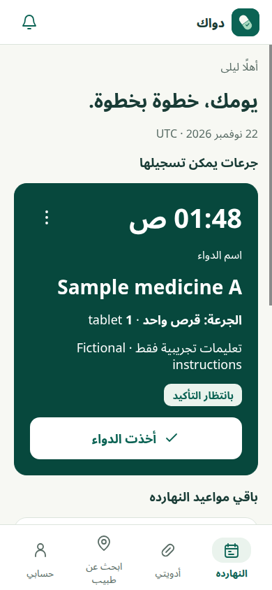

ابدأ من هنا
تذكير يناسب يومك.
ضيف دواءك وحدد مواعيده بنفسك، حتى من غير طبيب مرتبط بحسابك. وعلى أندرويد، فعّل المنبّه عشان تسمع موعد الجرعة.
تشغيل المنبّه يحتاج أذونات الهاتف وضبط إعدادات البطارية.
مساحة أبسط للعناية بصحتك
وسط زحمة اليوم، خلّي لدواك مكان.
تذكيرات واضحة، وروشتات مترتبة،
ومتابعة تجمعك بالناس اللي يهمّهم أمرك.
تحميل مجاني · نسخة تجريبية · بالعربي والإنجليزي
لك، وللي يهمّك.
للمريض والطبيب والمرافق، كل
واحد له مساحته.

خد فكرة، في ٣٨ ثانية.
من معاد الدواء لروشتتك الجاية، شوف إزاي دواك بيساعدك تنظّم علاجك، وتتابعه مع طبيبك واللي يهمّهم أمرك.
نسخة تجريبية · تحميل مجاني
تعذّر تشغيل الفيديو هنا. جرّب رابط «افتح الفيديو».
حاجات بسيطة. بتفرق في يومك.
ابدأ بالتذكير الشخصي، واستخدم باقي المميزات وقت ما تحتاجها.
ضيف دواءك وحدد مواعيده بنفسك، حتى من غير طبيب مرتبط بحسابك. وعلى أندرويد، فعّل المنبّه عشان تسمع موعد الجرعة.
تشغيل المنبّه يحتاج أذونات الهاتف وضبط إعدادات البطارية.
اسم الطبيب وتخصصه والتشخيص والأدوية في سجل واحد. اختار بنفسك تحويل أدوية الروشتة لتذكيرات، أو شاركها بصيغة PDF.
التذكير اختيارك أنت.ابحث بين العيادات المنشورة للأطباء المعتمدين على المنصة. اختار التخصص والمحافظة، وشوف موقع العيادة ومواعيدها.
بحث بالقائمة أو بالخريطة.اسمح لطبيبك أو المرافق بالاطلاع على سجلك. تقارير مبسطة توضح الجرعات اللي سجّلتها، مع إمكانية إنهاء المشاركة.
أنت تختار مين يشوف سجلك.التنبيهات المحلية اللي اتجدولت تفضل شغالة، وتقدر ترجع لأدويتك وروشتاتك المحفوظة على نفس الهاتف بعد مزامنتها.
المزامنة والخدمات الجديدة تحتاج إنترنت.مش مجرد كلام. خد لفة.
صور من واجهات التطبيق الفعلية، ببيانات تجريبية للعرض.
اختار
الشاشة وشوف التفاصيل.
موعد الدواء واضح، وتسجيل التناول بنقرة. مفيش داعي تراجع كل الروشتات عشان تعرف عليك إيه النهارده.
الرعاية مش دور واحد
ابدأ بأدويتك ومواعيدها. احتفظ بروشتاتك، وشارك سجلك مع طبيبك أو شخص تثق فيه لما تختار.
بعد موافقة المريض، راجع السجل العلاجي، واكتب روشتة، وتابع الجرعات المسجّلة. وأضف عياداتك بعد اعتماد حسابك.
اطلب متابعة من تحب. بعد موافقته، اطلع على أدويته وسجله وتقارير الجرعات اللي سجّلها.
تقارير الجرعات تعتمد على تسجيل المستخدم، ولا تُثبت تناول الدواء فعليًا.
نسخة أندرويد التجريبية
جرّب دواك مجانًا، وشاركنا تجربتك.
النسخة الحالية للاختبار
ببيانات تجريبية فقط.
أول مرة تثبّت ملف APK؟
افتح الصفحة من هاتف أندرويد واضغط «تنزيل APK». على الكمبيوتر، افتح نفس الرابط من هاتفك.
قد يطلب أندرويد السماح لهذا المتصفح بتثبيت التطبيق. اسمح له إذا كنت تثق بالمصدر، ثم أوقف الإذن بعد التثبيت. لا تعطّل حماية Play Protect.
فعّل بريدك، ثم جرّب إضافة دواء ببيانات توضيحية. اسمح بأذونات التنبيه والمنبّه، واختبر الرنين على هاتفك.
امسح الكود بكاميرا موبايلك لفتح صفحة التنزيل عليه.
دي نسخة اختبار وليست بديلًا عن وصفة الطبيب أو منبّهك الأساسي. استخدم بيانات تجريبية، واحتفظ بوسيلة تذكير بديلة خلال التجربة. غير متاحة حاليًا لآيفون.
إجابات على السريع
كل اللي يهمك تعرفه قبل التجربة.
لا. تقدر تضيف أدويتك وتحدد مواعيد التذكير بنفسك. ربط حسابك بطبيب أو مرافق اختياري، ويحتاج موافقتك.
التنبيهات المحلية المجدولة تعمل على الهاتف دون إنترنت بعد إعدادها ومنح الأذونات المطلوبة. الأدويه والروشتات المحفوظة بعد المزامنة متاحة على نفس الهاتف. التسجيل والبحث والروشتات الجديدة والمزامنة تحتاج اتصالًا. إعدادات البطارية والأذونات قد تؤثر على الرنين؛ اختبره على جهازك.
لا. اختار قائمة الخيارات الخاصة بالروشتة، ثم اختار تحويل الأدوية لتذكيرات. تقدر كمان تصدّر الروشتة PDF وتشاركها.
دواك حاليًا في مرحلة التجربة المبكرة. بنوزّع نسخة أندرويد من خلال هذه الصفحة وGitHub Releases. تحميل الملف لا يعني أنه خضع لمراجعة Google Play، والنسخة مخصصة للاختبار ببيانات تجريبية فقط.
ملف APK يعمل على أندرويد فقط. لا توجد نسخة آيفون موزّعة حاليًا، وسنعلن عن أي نسخة مستقبلية عند إتاحتها.
الاطلاع من الطبيب أو المرافق يحتاج طلب مشاركة تقبله أنت، ويمكن إنهاء المشاركة. خلال النسخة التجريبية، استخدم بيانات غير حقيقية؛ المشروع ما زال يخضع للاختبار والتحسين.
افتح نموذج الملاحظات على GitHub، واكتب نوع الهاتف ووصف الخطوات. يحتاج حساب GitHub، والملاحظات عامة؛ لا ترفق بيانات طبية أو كلمات مرور أو معلومات شخصية.